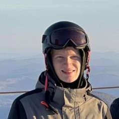
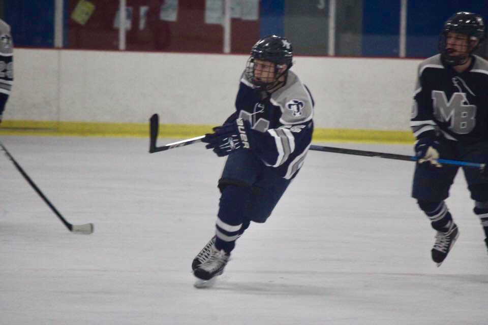

Michael Janczar - Bio
Bio
Hello! My name is Michael Janczar. I am 21 years old and currently majoring in Video Game Development and Design at New England Institute of Technology. I also work part time at Igus Motion Plastics in East Providence and I'm a USA Hockey certified level 3 official. I have lived in Pawtucket, Rhode Isalnd, my entire life and went to Jacqueline M Walsh School for the Arts for high school. At JMW all students could pick from four "majors" from music, dance, theater, and visual art. I majored in visual and while I was there learned how to use Photoshop, After Effects, and a bit of Illustrator. I also learned more traditional analog art like acrylics, water color, and charcoal.
Schooling

- New England Institute of Technology | College
- Community College of Rhode Island | College
- Jacqueline M. Walsh School for the Performing and Visual Arts | High School | So. Sr.
- Bishop Feehan | High School | Fr.
- St. Margaret | Middle School
Hobbies
Played high school hockey for Moses Brown, JMW did not have sports due to how small the school was.
- Hockey
- Lacrosse
- Video Games
- 3d Modeling
- Skiing